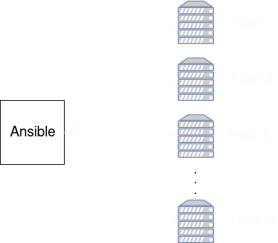

Speed Up Ansible
Ansible
- Application Deployment
- Configuration Management
- Continuous Delivery
Pros:
- Easy learning curve
- Nothing to install on remote hosts
- Push-Based
Slow as hell

How to solve this problem?
SSH Multiplexing
Ansible use OpenSSH
↓Manage communications
↓SSH Multiplexing by default
SSH Multiplexing
Default
| ControlMaster | auto |
|---|---|
| ControlPath | $HOME/.ansible/cp/ansible-ssh-%%h-%%p-%%r |
| ControlPersist | 60s |
ansible.cfg
[ssh_connection]
ssh_args = -o ControlMaster=auto -o ControlPersist=30m
control_path = %(directory)s/ansible-%%r@%%h:%%p
control_path_dir = ~/.ssh
Ansible tasks execution
- Generates Python script
- Copy to remote host
- Executes the Python script
Pipelining
cat python.py | ssh example.org
Optimization that allows Ansible execute the Python script by piping it to the SSH session
Configure pipelining
ansible.cfg
[ssh_connection]
pipelining = True
playbook.yml
- hosts: all
vars:
ansible_ssh_pipelining: no
tasks:
- name: Enable ansible pipelining
lineinfile:
regexp: '^\w+\s+requiretty'
dest: /etc/sudoers
state: absent
tags:
- enable_pipelining
Facts
- hosts: all
remote_user: root
tasks:
- name: ensure apache is at the latest version
yum: name=httpd state=latest
- name: write the apache config file
template: src=/srv/httpd.j2 dest=/etc/httpd.conf
- hosts: all
remote_user: root
tasks:
- name: ensure postgresql is at the latest version
yum: name=postgresql state=latest
- name: ensure that postgresql is started
service: name=postgresql state=started
Between play and play, facts are always gathered
Facts not needed
- Declare in playbooks:
- hosts: all gather_facts: False ... - Make it by default:
[defaults]
gathering = explicit
Facts Caching
- Json
- Redis
- memcached
ansible.cfg
[defaults]
gathering = smart
fact_caching = jsonfile
fact_caching_connection = ./.facts
fact_caching_timeout = 86400
Parallelism
Number of hosts configured in parallel
Parallelism
- ansible.cfg
[defaults] forks = 25 - parameter
--forks 25 - enviroment var
ANSIBLE_FORKS=25
Parallelism
Limit with SERIAL at play level
- hosts: all
serial: 3
- hosts: all
serial:
- 1
- 5
- 10
- hosts: all
serial: "30%"
- hosts: all
serial:
- 1
- 5
- "20%"
Parallelism
Strategies
- linear
- serial
- strategy
Install packages or update
Mirrors
Tools like yum's reposync or apt-cacher-ng
Proxy cache
- name: Update all packages (cache)
run_once: true
delegate_to: "{{ play_hosts[0] }}"
yum: name=* state=latest
- name: Update all packages
yum: name=* state=latest
Deploying inmutable instances
Create an updated instance with ec2_ami Ansible module, let you deploy faster and secured
with_items
- name: Installing basic packages
yum:
name: "{{ item }}"
state: latest
with_items:
- curl
- gcc
- bc
- net-tools
- unzip
- rsync
- bash-completion
APT cache time
- name: Installing useful packages
apt:
name: "{{ item }}"
update_cache: yes
cache_valid_time: 3600
with_items:
- vim
- htop
Async tasks
- name: "Running tests {{ running_test_level }}"
shell: "{{ available_tests[running_test_level] }} {{ item }}"
with_items: "{{ range(tests_parallel_executions|int) | list }}"
async: 400
poll: 0
register: run_tests
- name: 'Take return of tests'
async_status: jid={{ run_tests.results[item].ansible_job_id }}
register: job_result
until: job_result.finished
retries: 1000
delay: 20
with_items: "{{ range(tests_parallel_executions|int) | list }}"